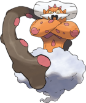

포켓몬고 그림자 랜드로스 화신폼 레이드 카운터 공략, 졸업스킬 약점 총정리까지
2026년 10월 7일 수요일부터, 포켓몬GO 그림자 레이드에 랜드로스(화신폼)이 등장할 예정이에요. 레이드 알림 탭을 켜놨다가 다음 로테이션 소식을 보고 바로 체크해뒀는데, 그림자 레이드는 로켓단이 점령한 체육관에서만 열리는 특수한 형태라 일반 레이드랑 준비물부터 조금 다르더라고요. 그래서 오늘은 그림자 랜드로스 화신폼 레이드를 미리 준비하는 분들을 위해 등장 일정이랑 약점, 데려갈 카운터, 그리고 포획 후에 딜러로 쓸 때의 졸업스킬까지 한 번에 정리해볼게요.

랜드로스 화신폼 공식 아트워크예요. ⓒNiantic/Pokémon
이미지 출처: Serebii.net · 네이버 본문엔 받아서 재업로드 권장
그림자 랜드로스 화신폼 레이드, 언제부터 열리나요?
그림자 랜드로스(화신폼) 레이드는 2026년 10월 7일(수) 06:00부터 11월 3일(화) 22:00까지, 주말마다 등장하는 걸로 확인됐어요. 포켓몬GO 소식을 꾸준히 모아주는 해외 사이트 리크덕(leekduck)이 공개한 레이드 로테이션 기준으로 확인한 내용인데, 직전까지는 그림자 썬더러스(화신폼)이 9월 9일부터 10월 6일까지 자리를 지키고 있었고 그 바통을 랜드로스가 이어받는 구조예요. 오늘(10월 1일) 기준으로는 아직 레이드가 시작 전이라 체육관에 가도 당장은 랜드로스가 안 보이니, 10월 7일 이후 주말 일정에 맞춰 움직이시는 게 좋겠습니다.
그림자 레이드는 일반 레이드랑 뭐가 다른가요?
그림자 레이드는 로켓단이 점령한 체육관에서만 열리고, 전투 중 특정 시점이 되면 보스가 '폭주' 상태가 되어 쓰러뜨리기 더 어려워지는 레이드예요. 일반 전설 레이드와 가장 크게 갈리는 지점이 두 가지인데, 하나는 원격 레이드 패스를 쓸 수 없다는 거고(무조건 체육관까지 직접 가야 해요), 다른 하나는 팀 보너스로 주는 프리미어볼이 없다는 거예요. 전투 중 보스가 '폭주' 상태가 되면 공격력·방어력이 더 세지는데, 이때 정화 크리스탈을 던지면 폭주를 가라앉힐 수 있다고 하니 참고해두시면 좋을 것 같아요.
그림자 랜드로스 화신폼 타입이랑 약점부터 짚어볼게요
그림자 랜드로스(화신폼)은 땅/비행 복합 타입이라 얼음 기술에 2.56배, 물 기술에 1.6배로 크게 약해요. 얼음·물 둘 다 챙기기 애매하면 얼음 기술 하나만 확실히 갖춰도 효율이 꽤 잘 나오는 편입니다.
| 항목 | 내용 |
|---|---|
| 타입 | 땅 / 비행 |
| 가장 강한 약점 | 얼음 기술 (2.56배) |
| 두 번째 약점 | 물 기술 (1.6배) |
인게임에 등록된 랜드로스 화신폼 모습이에요. ⓒNiantic/Pokémon
이미지 출처: Serebii.net · 네이버 본문엔 받아서 재업로드 권장
참고로 종족값은 해외 데이터베이스 dittobase 기준으로 공격 261·방어 182·체력 205(총합 648)로 집계돼 있어요. 이건 레이드 난이도 얘기가 아니라 포획 후 딜러로 쓸 때 얘긴데, 국내 팬사이트 poketory에 따르면 화신폼은 영물폼보다 공격력이 낮고, 대지의힘보다 더 강력한 전용기(레거시) 열사의폭풍을 배우지 못해 딜러 성능은 영물폼보다 다소 떨어진다고 해요(체력은 양쪽 다 205로 동일).
레이드 카운터는 누구를 데려가야 하나요?
약점인 얼음·물 기술을 쓰는 포켓몬 위주로 데려가는 게 좋은데, 정확한 인원 공식은 공개돼 있지 않지만 그림자 버프 때문에 일반 레이드보다 체감 난이도가 높으니 최소 3명 이상, 가능하면 더 모아서 가는 걸 추천해요. 국내 팬사이트 poketory가 정리한 추천 조합을 기준으로 추려보면 아래와 같습니다.
| 포켓몬 | 빠른기술 | 차지기술 |
|---|---|---|
| 가라르 불비달마 | 얼음엄니 | 눈사태 |
| (그림자) 맘모꾸리 | 눈싸라기 | 눈사태 |
| 그림자 뮤츠 | 사이코커터 | 냉동빔 |
| 메가 얼음귀신 | 얼음숨결 | 눈사태 |
| 글레이시아 | 얼음숨결 | 얼음뭉치 / 눈사태 |
| 원시 가이오가 | 폭포오르기 | 눈보라 |
3명 이상 모이는 자리라면 (그림자) 맘모꾸리를 한 마리 더 세우거나, 레지아이스·메가 레쿠쟈·라프라스까지 섞어서 화력을 더 끌어올릴 수 있어요. 얼음 기술 포켓몬이 부족하면 물 타입으로도 1.6배는 받으니, 손에 있는 파티로 먼저 맞춰보시는 것도 방법입니다.
포획한 그림자 랜드로스, 졸업스킬은 뭘로 맞추나요?
여기서부터는 카운터가 아니라, 레이드에서 잡은 그림자 랜드로스 자체를 내 딜러로 키울 때의 얘기예요. 빠른기술 '머드샷'에 차지기술 '대지의힘' 조합이 졸업스킬로 꼽힙니다. dittobase 기준 DPS 27.39·TDO 312로 보유 기술 중 가장 효율이 좋다고 집계돼 있고, 그 외에도 차지기술 두어 가지를 더 배울 수 있지만 효율은 머드샷+대지의힘 조합이 가장 좋더라고요.
참고로 그림자 포켓몬은 공격이 20% 오르고 방어가 20% 내려가는 보정이 붙는다고 알려져 있는데, 이건 나이언틱이 수치를 직접 공지한 공식 발표라기보다는 여러 커뮤니티 자료에서 오랫동안 일관되게 쓰이는 커뮤니티 검증 수치라는 점은 참고해두시면 좋겠습니다. 포획 CP는 일반 날씨면 1897~2050(Lv20), 날씨부스트가 걸리면 2372~2563(Lv25) 사이로 나온다고 하니(dittobase 기준), 포획 직후 CP만 보고 당황하지 않으셔도 돼요.
리크덕 공식 이벤트 페이지 기준으로 이로치(색다른 개체) 랜드로스도 등장 가능하다고 안내돼 있어요. 랜드로스 화신폼 자체도 원래부터 이로치가 존재하는 포켓몬이니, 혹시 색이 다른 개체가 보이면 놓치지 마세요.
색이 다른 이로치(색다른) 개체 모습이에요. ⓒNiantic/Pokémon
이미지 출처: Serebii.net · 네이버 본문엔 받아서 재업로드 권장
헷갈리기 쉬운 포인트 — '강철의 결심' 이벤트랑은 다른 거예요
지난 봄(4월 말~5월 초쯤) 진행됐던 '강철의 결심: 점령' 이벤트에서도 그림자 랜드로스 얘기가 나왔었는데, 이번 10월 그림자 레이드랑은 완전히 다른 콘텐츠예요. 그때는 슈퍼 로켓레이더로 지오바니를 찾아가서 구출하는 방식이었고, 이번엔 체육관에서 직접 레이드로 싸워 잡는 방식이라 등장 경로 자체가 달라요. '어? 전에 봤던 그 그림자 랜드로스 아니야?' 싶으실 수 있는데~ 서로 다른 이벤트니까 헷갈리지 않으셨으면 해요.
자주 묻는 질문
Q. 그림자 랜드로스 화신폼, 혼자서도 깰 수 있나요?
그림자 레이드는 폭주 상태 때문에 체감 난이도가 올라가서, 솔로 공략은 거의 불가능하다고 보고 최소 3명은 맞춰 가시는 게 좋아요.
Q. 친구한테 레이드 패스를 받아서 원격으로 같이 할 수는 없나요?
안 돼요. 그림자 레이드는 처음부터 원격 레이드 패스 자체가 적용되지 않는 구조라, 반드시 체육관까지 직접 가야 참가할 수 있어요.
Q. 잡고 나서 꼭 정화해야 하나요?
정화하면 강화·진화·새 기술 습득에 필요한 별모래·사탕 개수가 줄고 전용기 '은혜갚기'를 배우게 돼요. 다만 공략용 딜러로 쓰고 싶다면 오히려 공격력 보정이 붙은 그림자 상태 그대로 키우는 경우도 많아요. 육성 효율 목적이면 정화, 화력 목적이면 비정화로 갈리는 편이에요.
Q. 직전에 있던 그림자 썬더러스 화신폼이랑 같이 나오는 건 아니죠?
맞아요, 같이 나오지 않아요. 그림자 썬더러스(화신폼)은 9월 9일부터 10월 6일까지였고, 그 자리를 10월 7일부터 랜드로스가 그대로 이어받는 순차 로테이션이에요.
Q. 이번 로테이션이 끝나면 그림자 랜드로스는 다시 볼 수 없나요?
정확히 언제 다시 돌아올지는 공식 발표가 없어서 알 수 없지만, 그림자 레이드 보스가 보통 몇 주~몇 달 간격으로 로테이션되는 걸 보면 또 기회가 올 가능성은 있어요.
그림자 랜드로스 화신폼 레이드 정리
한 줄로 줄이면, 그림자 랜드로스 화신폼은 10월 7일부터 주말마다 열리는 레이드니까 얼음·물 카운터 미리 챙겨두시고 여유 있게 준비하시면 좋을 것 같아요. 정화 보상 같은 세부 내용은 공식 공지가 더 나오면 그때 업데이트해서 다시 정리해볼게요.
✔ 포켓몬고 같이 보기 좋은 내용
· 포켓몬고 이브이진화 종류 8가지 만드는법 이름트릭 버디 루어모듈 총정리
· 포켓몬GO 체리버 진화조건, 포켓몬고 체리꼬 네거폼·포지폼 결정법까지
· 포켓몬고 황혼의여정시즌 업데이트 정리, 신규포켓몬 메가진화 맥스배틀 뭐가 바뀌었나
참고한 곳
· 나이언틱 공식 도움말 — 그림자 레이드란?
· 포켓몬GO 공식 블로그 — Shadow Raids